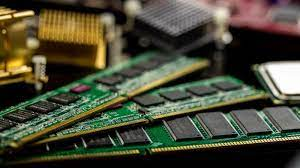

RAM
RAm adalah RAM atau Random Access Memory adalah sebuah perangkat keras yang tertanam dalam gawai seperti komputer, ponsel pintar, laptop dan perangkat lainnya. RAM memiliki fungsi sebagai memori sementara yang digunakan oleh gawai untuk dapat menjalankan sebuah fungsi dari aplikasi atau perangkat lunak. Maka, semakin besar kapasitas RAM dalam sebuah gawai, kecepatan dan optimalisasi penggunaan aplikasi atau perangkat lunak akan semakin baik dan mudah untuk diakses.
flashdisk
Flashdisk adalah sebuah alat penyimpanan data eksternal yang dihubungkan port USB yang mampu menyimpan berbagai format data dan memiliki kapasitas penyimpanan yang cukup besar. Flashdisk dapat menyimpan data secara permanen walaupun aliran listrik pada rangkaian flashdisk diputuskan. Ini terjadi karena didalam flashdisk terdapat sebuah controller dan memori yang mampu menyimpan data secara permanen walaupun aliran listrik yang ada pada flashdisk sudah diputuskan oleh user.
Ram

Flashdisk